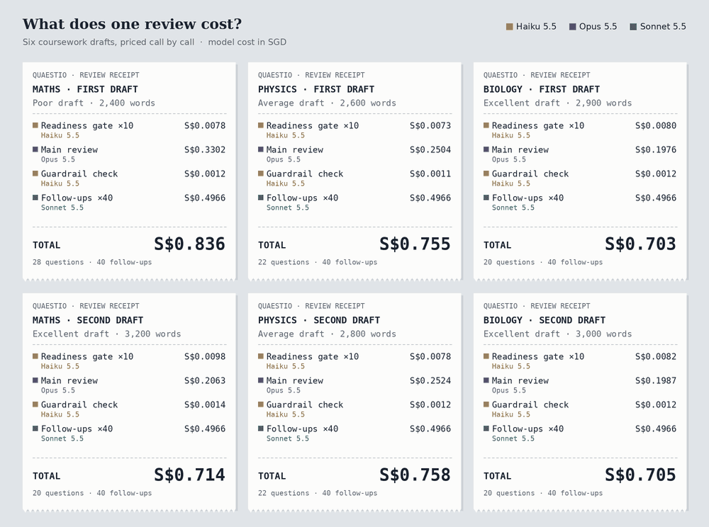

What Does a Question Cost? Pricing an AI Review, One Model Call at a Time
After I wrote about building Quaestio, the question I heard most wasn't about privacy or academic integrity. It was a budget question: what does one review actually cost, and who pays for it?
I recognised it straight away. In my presales years, that was the question that quietly decided deals. A buyer can love your demo, but if you can't say what the thing costs to run, and why, the conversation stalls.
It matters even more for Quaestio. In Building Quaestio I explained that it's licensed per student, and each student gets an allowance of reviews per subject, two by default. If the cost of a review swings wildly from one draft to the next, that allowance becomes hard to price honestly. So before promising any price to a school, I built a small simulation of the review pipeline and ran six drafts through it, priced call by call.

Three models, three jobs
A review isn't one call to one AI model. It's a short chain, and each link uses the cheapest model that does that job well. Only the feedback itself goes to the frontier model. This was one of the decisions I made in the requirements; the receipts are the first time I've seen what it's worth.
Checks the draft is a genuine, complete-enough piece of coursework before a review is used. Students often try several times before a draft passes, so I've budgeted for ten tries. Then it checks every question Opus writes, to confirm it contains no rewrites or text a student could paste in.Readiness gate · guardrail check
Reads the whole draft against the assessment criteria and writes the feedback, as questions only. This is the one job where the quality of the model shows up directly in the quality of the feedback.Main review
Answers the student's follow-ups: explaining a question in plain language, or helping them draft a question to take to their teacher.Up to two follow-ups on each question
What the receipts show
Follow-ups, not the review, are the biggest line
This one surprised me. I expected the frontier model to dominate the bill. It doesn't. A student can ask up to two follow-ups on each question, and a typical review raises at least 20 questions. Budgeting for full use means 40 Sonnet calls per review. Each one costs about a cent, but together they come to roughly S$0.50, more than the Opus review itself. For a strong draft, they cost about two and a half times as much.
So the price of a review isn't really set by the clever part. It's set by how much the student talks back. That's exactly what I want students to do, which is why the two-per-question cap matters: it keeps the conversation useful and the cost predictable.
Draft quality still moves the cost, but less than you'd expect
The poor maths draft costs about 20% more than the excellent biology draft, even though it has the fewest words. All of that difference sits in the Opus review: a weak draft takes longer to reason through and earns more questions. Because the follow-up budget is the same for everyone, it evens out the rest.
A second draft costs the same as a first draft of the same quality. Every review is independent by design: Quaestio never sends an earlier draft or earlier feedback with a request. "Never remember" was one of my five principles, and it turns out to have a small price tag that I'm happy to pay.
Ten tries at the readiness gate cost less than a cent
Students may submit a draft many times before it's ready for review. Ten Haiku checks come to under one Singapore cent per review. So the daily limit on gate attempts isn't there to save money. It's there to stop the gate being used as free feedback.
Using three models halves the bill
Sending the gate, the guardrail check and all 40 follow-ups to Opus would more than double the cost of every review. Keeping the frontier model for the feedback itself saves about 53%. Try the toggle below to see the difference.
Cost per review, by model
The same six drafts. Switch currency, or route every step to the frontier model.
What this means for a school
With the default allowance of two reviews per subject, the model cost for one student in one subject lands between roughly S$1.41 and S$1.55 in these scenarios. A student taking all four pilot subjects, using every review and every follow-up, would cost about S$6.20 for the year.
That's a ceiling, not an average. Most students won't ask two follow-ups on every question. If they ask half as many, each review costs about S$0.25 less. I'd rather price a licence on the ceiling and be pleasantly wrong than price on a guess and run short.
The figure is small, and predictable enough to build into a per-student licence. The larger costs of running Quaestio sit elsewhere: secure hosting in Singapore, redaction, the subject-teacher time that goes into the knowledge base, and support for schools. Model cost is the part that scales with use, which is why it's worth knowing precisely.
It also answers a quieter worry. A weaker draft gets a longer, more searching review, so the students who need the most help get the most of the model's effort. The allowance is the same for everyone. The effort the model spends isn't, and it shouldn't be.
The cheapest call in the pipeline turned out to be the biggest line on the bill.
How the numbers were built
I'd rather say this plainly: these are simulated reviews, not measurements from live use. The token counts below are my working assumptions, and I'll replace them with real figures from the pilot. Prices are Anthropic's published API rates for October 2026.
| Draft | Words | Draft tokens | Opus thinking | Questions | Gate tries | Follow-ups | Total (SGD) |
|---|
- Prices per million tokens (USD): Opus 5.5 $4 in / $20 out; Sonnet 5.5 $2 / $10; Haiku 5.5 $0.10 / $0.50. Cached reads are $0.20, $0.10 and $0.01 respectively. Converted at US$1 = S$1.28.
- Draft size: about 1.7 tokens per word after redaction; maths drafts run denser because equations travel as LaTeX.
- Shared material is cached: instructions, criterion checklists and knowledge-base entries (about 18,000 tokens for the main review) are billed at the cached rate. Student text is never cached.
- Each question is about 90 tokens of structured output: the question, the criterion it relates to, and where it points in the draft.
- Readiness gate: 10 attempts per review, each sending the draft's prose (figures replaced by markers) and returning a short verdict.
- Follow-ups: at least 20 questions per review, each with up to two follow-ups, so 40 per review. Each sends about 1,200 tokens plus 3,000 cached, and returns about 700.
- Not included: the occasional cache write when a cache expires, retries, and the premium for US-only data residency, which a Singapore launch doesn't need.
Four things I learned
- Find the real cost driver before you pick a pricing unit. I assumed the frontier model would set the price. The receipts said the student's follow-ups do. If I'd priced on the wrong driver, the margins would have depended on luck.
- Caps are pricing levers, not just product rules. The two-follow-ups-per-question cap and the daily gate limit started as design decisions about good learning. They turned out to be what makes a review's cost predictable enough to put in a contract.
- Model routing is a commercial decision too. I chose smaller models for speed and safety. The receipts showed routing also halves the bill. Architecture choices and pricing choices are the same conversation.
- Publish your assumptions with your numbers. A cost model without its assumptions is just a claim. Showing the token counts, the rates and what's left out invites a school's finance team to check my working, and that builds more trust than a single tidy figure.
As with the specification, I built this simulation working with Claude. I set the scenarios and the assumptions and decided what the numbers meant; Claude helped turn them into a working model and the receipts above, and kept me honest about what a simulation can and can't claim.
What's next
The next step is to replace every assumption in that table with a measurement. During the pilot I'll track real token counts per review, how many gate attempts and follow-ups students actually use, and whether weaker drafts really do cost more in practice. The follow-up rate matters most: it's the biggest line, and the one I've had to guess. Then the licence price can rest on evidence, not a spreadsheet of guesses.
Looking for a pilot school
We're looking for a small number of schools to pilot Quaestio with their pre-university students in the sciences and mathematics. If you're a coordinator, teacher or head of school, I'd love to hear from you. I'm also open to roles in AI solution consulting (presales) and product management, where this is exactly the kind of work I want to do.